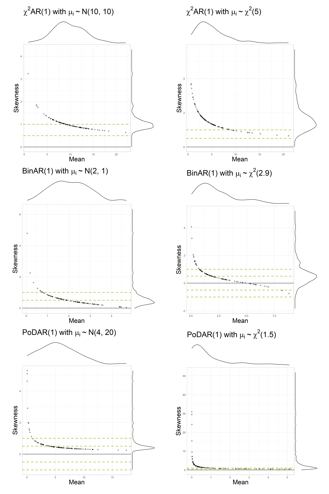

Skewness and staging: Does the floor effect induce bias in multilevel AR(1) models?
Reproducible codes
Introduction
This document contains the reproducible code for the manuscript Skewness and staging: Does the floor effect induce bias in multilevel AR(1) models? by M. M. Haqiqatkhah, O. Ryan, and E. L. Hamaker. please cite as:
…
In this study, we simulated multilevel data from three data generating mechanisms (DGMs), namely, the AR(1, \(\chi^2\)AR(1), BinAR(1), and PoDAR(1) models with different parameter sets.
For details, see the paper.
The simulation was conducted using the following modular pipeline design, inspired by Bien’s R package simulator (2016), consisting of the following components:
- Simulation: generating the datasets
- Analysis: modeling the data
- Harvesting: collecting the relevant parameter estimates
- Reporting: making tables and plots
And the components were placed in a pipeline, that managed:
- Making the simulation design matrix that include all relevant conditions
- Book-keeping data files belonging to each replication of each condition
- Performing simulations in batch
- Performing Analyses in batch
- Collecting the data in batch
This document is structured as follows. In Section 2, we explain the four components and the functions used therein. Then, in Section 3 we explain the wrapper functions used in the pipeline, and show how the pipeline was—and can be—executed. Finally, in Section 4, we discuss how the harvested data was used to make the figures used in the paper (and others that were not included).
Before we begin, we need to read the scripts to include them in this document. By default, none of the scripts run here (as they are time consuming). To run the scripts of each component, you can change the following variables to TRUE and re-render the document:
In case you want to change the scripts (e.g., to run a smaller portion of the simulation, or try other parameters, etc.), you should look up the kintr parameters called in each chunk (with <<some_param>>) and find the corresponding code (under ## @knitr some_param) in the scripts folder.
Core components
The Simulation component
The Simulation component consists of three sets of functions:
- Functions that implement the DGMs and generate univariate (\(N=1\)) time series of length \(T\) from the parameters given to them;
- Wrappers that interface the DGM functions;
- A wrapper to generate datasets (consisting on \(N\) time series of length \(T\)) with a given DGM
Data-generating models specifications
First we define functions for each data-generating models (DGMs) that can produce univariate, single-subject (\(N=1\)) time series of desired length \(T\) (default: T = 100) with the two canonical parameters and a given random seed (default: seed = 0). All model(-implied) parameters are saved in a list (called pa).
For each model, the first observation (\(X_1\)) is randomly drawn from the model-implied marginal distribution, to eliminate the need for removing the burn-in window in the beginning of the data. After the data is generated, in case the argument only.ts is set to be TRUE, the raw data (as a vector of length T) is returned. Otherwise, the function calculates empirical dynamic (\(\phi\)) and marginal (\(\mu\), \(\sigma^2\), and \(\gamma\)) parameters based on the simulated data, and save it in a list (Empirical.Parameters). Furthermore, two \(\mathrm{\LaTeX{}}\)-ready strings (Model.Description and Model.Description.Short) are made which include a summary of the model parameters (that can be used, e.g., in plots). Finally, in case only.ts != TRUE, the function returns a list consisting of the time series (stored in x), verbal description of the dataset (Model.Description and Model.Description.Short), theoretical (i.e., model-implied) parameters (Model.Parameters), and empirical (i.e., sample) estimated parameters (Empirical.Parameters).
The canonical parameters of the AR(1) model with normally distributed residuals (which we referred to as NAR(1) in the simulation) are the autoregressive parameter \(\phi\) (default: phi = 0.4), mean \(\mu\) (default: Mean = 50), and the marginal variance \(\sigma^2\) (default: var.marginal = 4). Based on the marginal variance, the residual variance (var.resid) is calculated via \(\sigma^2_\epsilon = \sigma^2 (1 - \phi^2)\).
Construction
The time series is constructed by first generating a zero-centered time series \(\tilde X_t\) (x_cent). To do so, first the initial observation in the time series (x_cent[1]) is sampled from normal distribution with mean zero and a variance equal to the marginal variance of the model:
\[ \tilde X_1 \sim \mathcal{N}(0, \sigma^2) \]
Then, the remainder of the time series is generated using the definition of the AR(1) model (not that the here the residual variance is used in the normal distribution):
\[ \begin{aligned} \tilde X_{t} &= \phi \tilde X_{t-1} + \epsilon_{t} \\ \epsilon_{t} &\sim \mathcal{N}(0, {\sigma^2_{\epsilon}}) \end{aligned} \] Finally, the mean is added to the centered zero-centered time series to reach the final time series with mean \(\mu\):
\[ X_t = \tilde X_t + \mu \]
Code
Click to expand the code
dgm_nar <- function(...){
pa <- list(...)
if(is.list(pa$pa)) pa <- pa$pa
## setting default seed if not given
if(is.null(pa$phi)) pa$phi <- 0.4
if(is.null(pa$Mean)) pa$Mean <- 50
if(is.null(pa$var.marginal)) pa$var.marginal <- 4
if(is.null(pa$var.resid)) pa$var.resid <- pa$var.marginal * (1 - pa$phi ^ 2)
if(is.null(pa$k)) pa$k <- 100
if(is.null(pa$T)) pa$T <- 100
if(is.null(pa$seed)) pa$seed <- 0
## Making sure var.marginal and var.resid are correctly related
pa$var.marginal <- pa$var.resid / (1 - pa$phi ^ 2)
### first make time series centered around zero
## drawing the first sample x_cent_1
set.seed(pa$seed)
x_cent <- rep(NA, pa$T)
x_cent[1] <- rnorm(n = 1,
mean = 0,
sd = sqrt(pa$var.marginal)
)
## making the rest of the centered time series
for (t in 2:pa$T){
x_cent[t] <- pa$phi*x_cent[t-1] + rnorm(n = 1,
mean = 0,
sd = sqrt(pa$var.resid)
)
}
## adding the mean to the centered time series
x <- x_cent + pa$Mean
## quick output of raw time series without book-keeping variables/parameters
if(!is.null(pa$only.ts))
if(pa$only.ts==TRUE) return(x)
Empirical.Parameters = list(Mean = mean(x),
Variance = var(x),
Skewness = moments::skewness(x),
AR = acf(x, lag.max = 1, plot = FALSE)$acf[2]
)
## making a LaTeX-ready list description of the model
Model.Description <- paste0("\\mu = ",
round(pa$Mean,2),
"(",
round(Empirical.Parameters$Mean,2),
")",
",\\; \\gamma = ",
0,
"(",
round(Empirical.Parameters$Skewness,2),
")",
",\\; \\phi = ",
round(pa$phi,2),
"(",
round(Empirical.Parameters$AR,2),
")",
",\\; \\sigma^2_{marginal} = ",
round(pa$var.marginal,2),
"(",
round(Empirical.Parameters$Variance,2),
")",
",\\; T = ",
pa$T,
"$")
Model.Description.Short <- paste0("$\\mu = ",
round(pa$Mean, 2),
",\\; \\sigma^2_{\\epsilon} = ",
round(pa$var.resid, 2),
",\\; \\phi = ",
round(pa$phi, 2),
"\\; \\rightarrow",
"\\; \\sigma^2 = ",
round(Empirical.Parameters$Variance,2),
",\\; \\gamma = ",
round(Empirical.Parameters$Skewness,2),
"$")
## making the output object
output <- list(x = x,
Model.Description = Model.Description,
Model.Description.Short = Model.Description.Short,
Model.Parameters = pa,
Empirical.Parameters = Empirical.Parameters)
return(output)
}The canonical parameters of the \(\chi^2\)AR(1) model (which we referred to as ChiAR(1) in the simulation) are the autoregressive parameter \(\phi\) (default: phi = 0.4), and degrees of freedom \(\nu\) (default: nu = 3). We set the intercept to zero (c = 0).1
Construction
Similar to the AR(1) model, we need to sample the first observation of the \(\chi^2\)AR(1) model from its marginal distribution. However, since this model does not have a closed-form marginal distribution, as an approximation, we instead sample x[1] from a \(\chi^2\) distribution with \(\nu\) degrees of freedom:
\[ X_1 \sim \chi^2(\nu) \]
Then, we generate the remainder of the time series using the definition of the \(\chi^2\)AR(1) model:
\[ \begin{aligned} X_{t} &= c + \phi X_{t-1} + a_{t} \\ a_{t} &\sim \chi^2(\nu). \end{aligned} \]
Code
Click to expand the code
dgm_chiar <- function(...){
pa <- list(...)
if(is.list(pa$pa)) pa <- pa$pa
## setting default seed if not given
if(is.null(pa$phi)) pa$phi <- 0.4
if(is.null(pa$nu)) pa$nu <- 3
if(is.null(pa$c)) pa$c <- 0
if(is.null(pa$k)) pa$k <- 100
if(is.null(pa$T)) pa$T <- 100
if(is.null(pa$seed)) pa$seed <- 0
## drawing the first sample x_1
set.seed(pa$seed)
x <- rep(NA, pa$T)
x[1] <- rchisq(n = 1,
df = pa$Mean)
## making the rest of the time series
for (t in 2:pa$T){
x[t] <- pa$c + pa$phi*x[t-1] + rchisq(n = 1,
df = pa$nu)
}
## quick output of raw time series without book-keeping variables/parameters
if(!is.null(pa$only.ts))
if(pa$only.ts==TRUE) return(x)
Empirical.Parameters = list(Mean = mean(x),
Variance = var(x),
Skewness = moments::skewness(x),
AR = acf(x, lag.max = 1, plot = FALSE)$acf[2]
)
## making a LaTeX-ready list description of the model
Model.Description <- paste0("$\\chi^2AR(1):", # \\; with",
"\\; \\mu = ",
round(pa$Mean,2),
"(",
round(Empirical.Parameters$Mean,2),
")",
",\\; \\gamma = ",
round(pa$Skewness,2),
"(",
round(Empirical.Parameters$Skewness,2),
")",
",\\; \\phi = ",
round(pa$phi,2),
"(",
round(Empirical.Parameters$AR,2),
")",
",\\; \\nu = ",
round(pa$nu,2),
",\\; c = ",
round(pa$c,3),
",\\; T = ",
pa$T,
"$")
Model.Description.Short <- paste0("$c = ",
round(pa$c,2),
",\\; \\nu = ",
round(pa$nu, 2),
",\\; \\phi = ",
round(pa$phi, 2),
"\\; \\rightarrow",
"\\; \\mu = ",
round(Empirical.Parameters$Mean, 2),
",\\; \\sigma^2 = ",
round(Empirical.Parameters$Variance,2),
",\\; \\gamma = ",
round(Empirical.Parameters$Skewness,2),
"$")
## making the output object
output <- list(x = x,
Model.Description = Model.Description,
Model.Description.Short = Model.Description.Short,
Model.Parameters = pa,
Empirical.Parameters = Empirical.Parameters)
return(output)
}The canonical parameters of the BinAR(1) model (which we referred to as BinAR(1) in the simulation) are the survival probability \(\alpha\) (default: alpha = 0.5) and the revival probability \(\beta\) (default: beta = 0.4). By default, the maximum value on scale \(k\) was set to k = 10.
Construction
We first calculate the \(\theta\) parameter, which characterizes the marginal distribution of the BinaR(1) model:
\[
\theta = \frac{k \beta}{1-(\alpha-\beta)}
\] Then we draw \(X_1\) (x[1]) from the marginal distribution of the model:
\[ X_1 \sim Binom(k, \theta) \]
The rest of time series is generated sequentially, for each time point \(t\), by drawing values for the number of survived (S_t[t]) and revived (R_t[t]) elements of the BinAR(1) model based on the previous observations (\(X_{t-1}\)), and then adding them:
\[ \begin{aligned} S_{t} &\sim Binom(X_{t-1}, \alpha) \\ R_t &\sim Binom(k -X_{t-1}, \beta) \\ X_{t} &= S_t + R_t \end{aligned} \]
Code
Click to expand the code
dgm_binar <- function(...){
pa <- list(...)
if(is.list(pa$pa)) pa <- pa$pa
## setting default seed if not given
if(is.null(pa$alpha)) pa$alpha <- 0.5
if(is.null(pa$beta)) pa$beta <- 0.4
if(is.null(pa$k)) pa$k <- 10
if(is.null(pa$T)) pa$T <- 100
if(is.null(pa$seed)) pa$seed <- 0
## making other parameters
pa$rho <- pa$alpha - pa$beta
pa$theta <- pa$beta/(1-pa$rho)
## drawing the first sample x_1
set.seed(pa$seed)
x <- rep(NA, pa$T)
x[1] <- rbinom(n = 1,
size = pa$k ,
prob = pa$theta)
## making the rest of the time series
for (t in 2:pa$T){
S_t <- rbinom(n = 1,
size = x[t-1],
prob = pa$alpha)
R_t <- rbinom(n = 1,
size = pa$k - x[t-1],
prob = pa$beta)
x[t] <- S_t + R_t
}
## quick output of raw time series without book-keeping variables/parameters
if(!is.null(pa$only.ts))
if(pa$only.ts==TRUE) return(x)
Empirical.Parameters = list(Mean = mean(x),
Variance = var(x),
Skewness = moments::skewness(x),
AR = acf(x, lag.max = 1, plot = FALSE)$acf[2]
)
## making a LaTeX-ready list description of the model
Model.Description <- paste0("$BinAR(1):",
"\\; \\mu = ",
round(pa$Mean,2),
"(",
round(Empirical.Parameters$Mean,2),
")",
",\\; \\gamma = ",
round(pa$Skewness,2),
"(",
round(Empirical.Parameters$Skewness,2),
")",
",\\; \\rho = ",
round(pa$rho,3),
"(",
round(Empirical.Parameters$AR,2),
")",
",\\; \\alpha = ",
round(pa$alpha,2),
",\\; \\beta = ",
round(pa$beta,2),
",\\; \\theta = ",
round(pa$theta,3),
",\\; T = ",
pa$T,
"$")
Model.Description.Short <- paste0("$k =",
round(pa$k,2),
",\\; \\alpha = ",
round(pa$alpha,2),
",\\; \\beta = ",
round(pa$beta,2),
"\\; \\rightarrow",
"\\; \\rho = ",
round(Empirical.Parameters$AR, 2),
",\\; \\mu = ",
round(Empirical.Parameters$Mean, 2),
",\\; \\sigma^2 = ",
round(Empirical.Parameters$Variance,2),
",\\; \\gamma = ",
round(Empirical.Parameters$Skewness,2),
"$")
## making the output object
output <- list(x = x,
Model.Description = Model.Description,
Model.Description.Short = Model.Description.Short,
Model.Parameters = pa,
Empirical.Parameters = Empirical.Parameters)
return(output)
}The canonical parameters of the PoDAR(1) model (which we referred to as PoDAR(1) in the simulation) are the persistence probability \(\tau\) (default: tau = 0.7) and the average rate \(\lambda\) (default: lambda = 0.5).
Construction
To generate the time series, we first draw the first observation \(X_1\) (x[1]) from a Poisson distribution with rate \(\lambda\):
\[ X_1 \sim Poisson(\lambda) \]
And generate the rest of the time series by first drawing \(Z_t\) from a Poisson distribution with rate \(\lambda\) and \(P_t\) from a binomial distribution with size probability of success \(\tau\) (that is equivalent to a Bernoulli distribution with probability \(\tau\)). Then, we calculate \(X_t\) based on the previous observation (x[t-1]) and values of \(Z_t\) (Z_t[t]) and \(P_t\) (P_t[t]), using the definition of the PoDAR(1) model:
\[ \begin{aligned} Z_t &\sim Poisson(\lambda) \\ P_t &\sim Binom(1, \tau) \\ X_t &= P_t X_{t-1} + (1-P_t) Z_t \end{aligned} \]
Code
Click to expand the code
dgm_podar <- function(...){
pa <- list(...)
if(is.list(pa$pa)) pa <- pa$pa
## setting default seed if not given
if(is.null(pa$tau)) pa$tau <- 0.7
if(is.null(pa$lambda)) pa$lambda <- 0.5
if(is.null(pa$k)) pa$k <- 6
if(is.null(pa$T)) pa$T <- 100
if(is.null(pa$seed)) pa$seed <- 0
## drawing the first sample x_1
set.seed(pa$seed)
x <- rep(NA, pa$T)
x[1] <- rpois(n = 1,
lambda = pa$lambda)
## making the rest of the time series
for (t in 2:pa$T){
V_t <- rbinom(n = 1,
size = 1,
prob = pa$tau)
Z_t <- rpois(n = 1,
lambda = pa$lambda)
x[t] <- V_t*x[t-1] + (1-V_t)*Z_t
}
## quick output of raw time series without book-keeping variables/parameters
if(!is.null(pa$only.ts))
if(pa$only.ts==TRUE) return(x)
Empirical.Parameters = list(Mean = mean(x),
Variance = var(x),
Skewness = moments::skewness(x),
AR = acf(x, lag.max = 1, plot = FALSE)$acf[2]
)
## making a LaTeX-ready list description of the model
Model.Description <- paste0("$PoDAR(1):",
"\\; \\mu = ",
round(pa$Mean,2),
"(",
round(Empirical.Parameters$Mean,2),
")",
",\\; \\gamma = ",
round(pa$Skewness,2),
"(",
round(Empirical.Parameters$Skewness,2),
")",
"\\; \\tau = ",
round(pa$tau,3),
"(",
round(Empirical.Parameters$AR,2),
")",
",\\; \\lambda = ",
round(pa$lambda,3),
",\\; T = ",
pa$T,
"$")
Model.Description.Short <- paste0("$\\lambda = ",
round(pa$lambda,3),
",\\; \\tau = ",
round(pa$tau, 2),
"\\; \\rightarrow",
"\\; \\rho = ",
round(Empirical.Parameters$AR, 2),
",\\; \\mu = ",
round(Empirical.Parameters$Mean, 2),
",\\; \\sigma^2 = ",
round(Empirical.Parameters$Variance,2),
",\\; \\gamma = ",
round(Empirical.Parameters$Skewness,2),
"$")
## making the output object
output <- list(x = x,
Model.Description = Model.Description,
Model.Description.Short = Model.Description.Short,
Model.Parameters = pa,
Empirical.Parameters = Empirical.Parameters)
return(output)
}
# General DGM wrappers ----------------------------------------------------General DGM wrappers
Given that, in each model, two canonical parameters characterize the dynamic and marginal features of the generated time series, and given that we have analytic formulas that link the canonical parameters to the model-implied \(\phi\), \(\mu\), \(\sigma^2\), and \(\gamma\), we use a function (dgm_parameterizer) to calculate canonical parameters from two given parameters, and make a complete list of parameters (called pa). This list also includes non-parameter variables, importantly, the time series length \(T\) (saved in pa$T) and the random seed used in the dgm_* functions (saved in pa$seed). A wrapper function (dgm_generator) is used as an interface to all dgm_* functions, which first makes sure the given parameters are sufficient for data generation, makes a complete parameter list pa with the help of dgm_parameterizer, and passes pa to the respective DGM generating function.
The function dgm_parameterizer calculates canonical/model-implied parameters of a given DGM (specified using the Model argument) based on the parameters given to it as arguments, and saves them in a list of parameters (pa), which s returned by the function. The function makes sure that the set of parameters provided are sufficient to characterize the dynamic parameter of the model (i.e., the autoregression \(\phi\)) and at least one of the marginal parameters (importantly, the mean \(\mu\)) but giving default values to some parameters.
Click to expand the code
dgm_parameterizer <- function(...){
pa <- list(...)
if(is.list(pa$pa)) pa <- pa$pa
if(is.null(pa$Model)) pa$Model <- "ChiAR(1)"
if(is.null(pa$phi)) pa$phi <- 0.2
## %%%%%%%%%%%%
## for NAR(1)
## %%%%%%%%%%%%
if(tolower(pa$Model) == "nar(1)" | tolower(pa$Model) == "nar"){
if(is.null(pa$k)) pa$k <- 100
## Calculating model parameters
## if mean is given
if (!is.null(pa$Mean)) {
# then from the mean formula
pa$c <- pa$Mean * (1 - pa$phi)
}
## if mean is not given, we get it from the intercept
else{
# set intercept to zero, if already not defined
if(is.null(pa$c)) pa$c <- 0
# then from the mean formula
pa$Mean <- pa$c / (1 - pa$phi)
}
## Now we certainly have the mean calculated
## The within-person (marginal) variance is more interpretable. So
## we always calculate the residual variance based on the marginal
## variance, unless var.resid is known BUT var.marginal is NOT.
if (!is.null(pa$var.resid) & is.null(pa$var.marginal)) {
# from the marginal variance formula
pa$var.marginal <- pa$var.resid / (1 - pa$phi ^ 2)
}
## If none of them are known we first give var.marginal a default
## value and calculate var.resid based on that.
if (is.null(pa$var.resid) & is.null(pa$var.marginal)) {
# we set a default value for the marginal variance
pa$var.marginal <- 4
}
## Then, we calculate var.resid (again) with var.marginal to make
## sure that the marginal variance had been given more importance
pa$var.resid <- pa$var.marginal * (1 - pa$phi ^ 2)
## Returning the parameter list
return(pa)
}
## %%%%%%%%%%%%
## for ChiAR(1)
## %%%%%%%%%%%%
if(tolower(pa$Model) == "chiar(1)" | tolower(pa$Model) == "chiar" |
tolower(pa$Model) == "chi2ar(1)" | tolower(pa$Model) == "chi2ar"){
if(is.null(pa$k)) pa$k <- 100
## Calculating model parameters
## if mean and skewness are given
if (!is.null(pa$Mean) & !is.null(pa$Skewness)) {
# from the skewness formula
pa$nu <-
8 * (1 - pa$phi ^ 2) ^ 3 / ((pa$Skewness ^ 2) * (1 - pa$phi ^
3) ^ 2)
# then from the mean formula
pa$c <- pa$Mean * (1 - pa$phi) - pa$nu
# returning the parameter list
return(pa)
}
## if mean and skewness are not given at the same time, we use c
## and one other parameter
else{
# set intercept to zero, if already not defined
if(is.null(pa$c)) pa$c <- 0
## if mean is given
if (!is.null(pa$Mean)) {
# then from the mean formula
pa$nu <- pa$Mean * (1 - pa$phi) - pa$c
# from the skewness formula
pa$Skewness <-
2 * (1 - pa$phi ^ 2) ^ 1.5 / (sqrt(pa$nu / 2) * (1 - pa$phi ^
3))
# returning the parameter list
return(pa)
}
## if skewness is given
if (!is.null(pa$Skewness)) {
# from the skewness formula
pa$nu <-
8 * (1 - pa$phi ^ 2) ^ 3 / ((pa$Skewness ^ 2) * (1 - pa$phi ^
3) ^ 2)
# then from the mean formula
pa$Mean <- (pa$c + pa$nu) / (1 - pa$phi)
# returning the parameter list
return(pa)
}
## if nu is given
if(!is.null(pa$nu)){
# from the mean formula
pa$Mean <- (pa$c + pa$nu)/(1-pa$phi)
# from the skewness formula
pa$Skewness <-
2 * (1 - pa$phi ^ 2) ^ 1.5 / (sqrt(pa$nu / 2) * (1 - pa$phi ^
3))
# returning the parameter list
return(pa)
}
}
}
## %%%%%%%%%%%%
## for BinAR(1)
## %%%%%%%%%%%%
if (tolower(pa$Model) == "binar(1)" | tolower(pa$Model) == "binar") {
if (is.null(pa$k))
pa$k <- 10
## Calculating model parameters
## if mean is given
if (!is.null(pa$Mean)) {
# from skewness formula: m = k*theta
pa$theta <- pa$Mean / pa$k
## we then calculate skewness based on theta
pa$Skewness <- (1 - 2 * pa$theta) / sqrt(pa$k * pa$theta * (1 - pa$theta))
## we then calculate beta based on theta and phi
pa$beta <- pa$theta * (1 - pa$phi)
# then we calculate alpha
pa$alpha <- pa$phi + pa$beta
# finally we calculate k*beta, which is equivalent to c
pa$c <- pa$k * pa$beta
# returning the parameter list
return(pa)
}
## if skewness is given
if (!is.null(pa$Skewness)) {
# from skewness formula: skewness = (1-2*theta)/sqrt(k*theta*(1-theta))
# it is easier to write with ks = k*(skewness^2)
ks <- pa$k*pa$Skewness^2
pa$theta <- (ks + 4 -
sqrt(ks * (ks + 4))) / (2 * ks + 8)
# The above formula only gives theta < 0.5, thus for negative skewness
# we must use 1-theta instead
if(pa$Skewness < 0) pa$theta <- 1 - pa$theta
# we then calculate mean based on theta
pa$Mean <- pa$k * pa$theta
# we then calculate beta based on theta and phi
pa$beta <- pa$theta * (1 - pa$phi)
# then we calculate alpha
pa$alpha <- pa$phi + pa$beta
# finally we calculate k*beta, which is equivalent to c
pa$c <- pa$k * pa$beta
# returning the parameter list
return(pa)
}
## if theta is given
if (!is.null(pa$theta)) {
# from theta formula
pa$beta <- pa$theta * (1 - pa$phi)
# from beta formula
pa$alpha <- pa$phi + pa$beta
# we then calculate mean based on theta
pa$Mean <- pa$k * pa$theta
# we then calculate skewness based on theta
pa$Skewness <- (1 - 2 * pa$theta) / sqrt(pa$k * pa$theta * (1 - pa$theta))
# finally we calculate k*beta, which is equivalent to c
pa$c <- pa$k * pa$beta
# returning the parameter list
return(pa)
}
## if alpha is given
if (!is.null(pa$alpha)) {
# from beta formula
pa$beta <- pa$alpha - pa$phi
# from theta formula
pa$theta <- pa$beta / (1 - pa$phi)
# we then calculate mean based on theta
pa$Mean <- pa$k * pa$theta
# we then calculate skewness based on theta
pa$Skewness <- (1 - 2 * pa$theta) / sqrt(pa$k * pa$theta * (1 - pa$theta))
# finally we calculate k*beta, which is equivalent to c
pa$c <- pa$k * pa$beta
# returning the parameter list
return(pa)
}
## if beta is given
if (!is.null(pa$beta)) {
# from beta formula
pa$alpha <- pa$phi + pa$beta
# from theta formula
pa$theta <- pa$beta / (1 - pa$phi)
# we then calculate mean based on theta
pa$Mean <- pa$k * pa$theta
# we then calculate skewness based on theta
pa$Skewness <- (1 - 2 * pa$theta) / sqrt(pa$k * pa$theta * (1 - pa$theta))
# finally we calculate k*beta, which is equivalent to c
pa$c <- pa$k * pa$beta
# returning the parameter list
return(pa)
}
## if intercept given
if (!is.null(pa$c)) {
# from intercept formula c = k*beta
pa$beta <- pa$c / pa$k
# from beta formula
pa$alpha <- pa$phi + pa$beta
# from theta formula
pa$theta <- pa$beta / (1 - pa$phi)
# we then calculate mean based on theta
pa$Mean <- pa$k * pa$theta
# we then calculate skewness based on theta
pa$Skewness <- (1 - 2 * pa$theta) / sqrt(pa$k * pa$theta * (1 - pa$theta))
# returning the parameter list
return(pa)
}
}
## %%%%%%%%%%%%
## for PoDAR(1)
## %%%%%%%%%%%%
if (tolower(pa$Model) == "podar(1)" | tolower(pa$Model) == "podar") {
if (is.null(pa$k))
pa$k <- 50
# phi and tau are the same, then if tau is defined, it overrules phi
if(!is.null(pa$tau)) pa$phi <- pa$tau
# and if tau is not defined, then tau will get the value of phi
if(is.null(pa$tau)) pa$tau <- pa$phi
# DAR(1) intercept is zero
pa$c <- 0
## Calculating model parameters
## if mean is given
if (!is.null(pa$Mean)) {
# mean of Poisson is lambda
pa$lambda <- pa$Mean
## we then calculate skewness based on lambda
pa$Skewness <- pa$lambda^(-0.5)
# returning the parameter list
return(pa)
}
## if skewness is given
if (!is.null(pa$Skewness)) {
# from skewness formula: skewness = 1/sqrt(lambda)
pa$lambda <- pa$Skewness^(-2)
# we then calculate mean based on theta
pa$Mean <- pa$lambda
# returning the parameter list
return(pa)
}
## if lambda is given
if (!is.null(pa$lambda)) {
# mean of Poisson is lambda
pa$Mean <- pa$lambda
## we then calculate skewness based on lambda
pa$Skewness <- pa$lambda^(-0.5)
# returning the parameter list
return(pa)
}
}
}The function dgm_generator gets a set of parameters (either as separate arguments, or a list of parameters, like the one returned by dgm_parameterizer), saves them in a list called pa. It checks whether \(\phi\) is included in the list (if not, sets the default value pa$phi = 0.2), and checks if at least one other parameter (which, together with \(\phi\), is required to characterize the marginal properties of the DGMs) is calculated for it (if not, it sets the default value pa$Mean = 5 for \(\mu\)). Furthermore, if the DGM name, time series length, and the random seed are not provided, it gives them default values (respectively: Model = "ChiAR(1)", T = 100, and seed = 0) and adds them to pa.
Then, it passes the pa list to dgm_parameterizer to do the necessary conversions to complete the list of canonical and model-implied parameters. Finally, given the model name, it checks if non-canonical parameters \(k\) and \(c\) are set (otherwise assigns appropriate defaults to them), and passes the complete parameter list to the respective DGM function.
Click to expand the code
dgm_generator <- function(...){
pa <- list(...)
if(is.list(pa$pa)) pa <- pa$pa
## setting default seed if not given
if(is.null(pa$Model)) pa$Model <- "ChiAR(1)"
if(is.null(pa$phi)) pa$phi <- 0.2
# if no model parameter is given, then mean is set to a default 5
if (is.null(pa$Mean) &
is.null(pa$Skewness) &
is.null(pa$c) &
is.null(pa$nu) &
is.null(pa$alpha) &
is.null(pa$beta) &
is.null(pa$theta)
) pa$Mean <- 5
# if(is.null(pa$Mean)) pa$Variance <- 10
# if(is.null(pa$Skewness)) pa$Skewness <- 3
if(is.null(pa$T)) pa$T <- 100
if(is.null(pa$seed)) pa$seed <- 0
if(is.null(pa$only.ts)) pa$only.ts <- FALSE
## If you set `pa$only.ts` parameter as TRUE, the dgm_ functions produce only
## the raw time series (a single numeric vector) which is way lighter and way
## faster:
# pa$only.ts <- TRUE
## calculating model parameters
pa <- dgm_parameterizer(pa = pa)
### making models
## %%%%%%%%%%%%
## NAR(1)
## %%%%%%%%%%%%
if(tolower(pa$Model) == "nar(1)" | tolower(pa$Model) == "nar"){
# default maximum scale value
if(is.null(pa$k)) pa$k <- 100
## %% Generating the data
o <- dgm_nar(pa = pa)
}
## %%%%%%%%%%%%
## ChiAR(1)
## %%%%%%%%%%%%
if(tolower(pa$Model) == "chiar(1)" | tolower(pa$Model) == "chiar" |
tolower(pa$Model) == "chi2ar(1)" | tolower(pa$Model) == "chi2ar"){
# default maximum scale value
if(is.null(pa$k)) pa$k <- 100
## %% Generating the data
o <- dgm_chiar(pa = pa)
}
## %%%%%%%%%%%%
## BinAR(1)
## %%%%%%%%%%%%
if(tolower(pa$Model) == "binar(1)" | tolower(pa$Model) == "binar"){
# default maximum scale value
if(is.null(pa$k)) pa$k <- 10
## %% Generating the data
o <- dgm_binar(pa = pa)
}
## %%%%%%%%%%%%
## DAR(1)
## %%%%%%%%%%%%
if(tolower(pa$Model) == "dar(1)" | tolower(pa$Model) == "dar"){
# default maximum scale value
if(is.null(pa$k)) pa$k <- 10
## %% Generating the data
o <- dgm_dar(pa = pa)
}
## %%%%%%%%%%%%
## PoDAR(1)
## %%%%%%%%%%%%
if(tolower(pa$Model) == "podar(1)" | tolower(pa$Model) == "podar"){
# default maximum scale value
if(is.null(pa$k)) pa$k <- 100
## %% Generating the data
o <- dgm_podar(pa = pa)
}
## Also allow a data frame output
# if(!is.null(p$as.dataframe) & p$as.dataframe){
#
# }
return(o)
}
# Dataset generation ------------------------------------------------------Dataset generation
The machinery described above can be used to generate individual (\(N=1\)) time series. However, for the simulation study, we need datasets comprising of multiple (\(N=25, 50, 100\)) individuals. As we discussed in the paper, in our study, all individuals in a dataset of a DGM share the same autoregressive parameter (\(\phi_i=0.4\)) and the individual differences are only in the individual means (\(\mathbb{\mu} = [\mu_1 , \mu_2, \dots, \mu_N]\)). Thus, we write a function (dgm_make.sample) that can generate, for each DGM, a dataset of \(N\) individuals based on an \(N\)-dimensional vector of individual means, all with the same \(\phi_i\). We then need to find the appropriate parameters for the level-2 distributions (Gaussian and \(\chi^2\) distributions) for each DGM, such that the we get a considerable proportion of individuals with considerably high skewness while respecting the lower and upper bounds of values supported by each model. Finally, with a wrapper function (make_datasets), we facilitate making dataset by automatically generating the means vector suitable for each DGM.
The function dgm_make.sample generates a dataset of time series of length T with the autoregressive parameter phi from a desired DGM (determined by the Model argument) given a vector of means (passed as the argument Means). The length of Means determine the number of individuals in the dataset (N <- length(Means)). If Means is not provided, a randomly generated vector of \(N = 100\) is used as default. Since each individual time series is generated with a random seed, we need a vector of N unique seeds, which can be provided using the seeds argument. In case seeds is not provided, it is generated based on the provided means (seeds.from.means), and if it is a scalar, the seeds vector is created by adding the scalar to the seeds.from.means (which would allow generating different datasets with the same mean distributions).
Click to expand the code
dgm_make.sample <- function(Model = "ChiAR(1)",
Means = rnorm(100, 5, 3),
T = 100,
phi = 0.4,
seeds = NULL
){
N <- length(Means)
seeds.from.means <- 1000*N*Means
if(is.null(seeds)) seeds <- seeds.from.means
if(length(seeds)<=1) seeds <- seeds + seeds.from.means
df <- data.frame(subject = rep(1:N, each = T),
t = rep(1:T, times = N),
x = rep(NA, N*T))
for(s in 1:N){
x <- dgm_generator(
Model = Model,
only.ts = TRUE,
T = T,
phi = phi,
Mean = Means[s],
seed = seeds[s])
df$x[((s-1)*T + 1):(s*T)] <- x
}
return(df)
}To ensure that the distribution parameters of the
For each alternative DGM—the \(\chi^2\)AR(1), BinAR(1), and PoDAR(1) models—we should determine appropriate parameters for the level-2 distribution of means such that we have enough skewness in the generated datasets. To do so, we make a function (Mean.vs.Skewness) to help us experiment with different values for \(\mu\) and \(\sigma^2\) (of the Gaussian level-2 distribution) and \(\nu\) (of the \(\chi^2\) level-2 distribution) for each alternative DGM. Note that we start by generating more than enough samples for each distribution (\(10 \times N\)) and subsample \(N\) values after applying the model-specific lower and upper bounds.
Click to expand the code
Mean.vs.Skewness <- function(Model = "Chi2AR",
l2.mean = 50,
l2.var = 20,
chi2.df = NULL,
phi = 0.4,
N = 100,
k = 10,
seed = 1){
# Making a vector of means with size 10*N
set.seed(seed)
if(is.null(chi2.df)){
Mean <- rnorm(10 * N, l2.mean, sqrt(l2.var))
title.dist <- glue("$\\mu_i \\sim N$({l2.mean}, {l2.var})")
}else{
Mean <- rchisq(10 * N, chi2.df)
title.dist <- glue("$\\mu_i \\sim \\chi^2$({chi2.df})")
}
# Calculating skewness and setting bounds per DGM
if (tolower(Model) == "chiar" | tolower(Model) == "chi2ar") {
model.name <- "$\\chi^2$AR(1)"
lower_bound <- 0
upper_bound <- 100
# set intercept to 0
c <- 0
# then from the mean formula
nu <- Mean * (1 - phi) - c
# from the skewness formula
Skewness <-
2 * (1 - phi ^ 2) ^ 1.5 / (sqrt(abs(nu) / 2) * (1 - phi ^ 3))
}
if (tolower(Model) == "binar") {
model.name <- "BinAR(1)"
lower_bound <- 0
upper_bound <- k
# from skewness formula: mean = k*theta
theta <- Mean / k
# we then calculate skewness based on theta
Skewness <- (1 - 2 * theta) / sqrt(abs(k * theta * (1 - theta)))
}
if (tolower(Model) == "podar") {
model.name <- "PoDAR(1)"
lower_bound <- 0
upper_bound <- 100
# from the mean formula
lambda <- Mean
# from the skewness formula
Skewness <- lambda^(-0.5)
}
# Making a dataframe, removing out of bound samples, and resampling
d <- data.frame(Mean = Mean,
Skewness = Skewness) %>%
filter(Mean > lower_bound & Mean < upper_bound) %>%
slice_sample(n = N)
title <- paste(model.name,
"with",
title.dist)
# Making the plot
p <- ggplot(d, aes(x = Mean, y = Skewness)) +
geom_point(alpha = 0.4) +
theme_light() +
labs(title = TeX(title)) +
ylim(min(0, min(Skewness)), max(1.5, max(Skewness))) +
geom_hline(
yintercept = c(-1, -0.5, 0.5, 1),
colour = "yellowgreen",
linetype = "dashed",
size = rel(1)
) +
geom_hline(
yintercept = 0,
colour = "black",
linetype = "solid",
size = rel(0.5)
) +
theme(aspect.ratio = 1,
title = element_text(size = rel(2))) +
ggtitle(TeX(title))
ggExtra::ggMarginal(p,
type = 'density',
margins = 'both',
size = 4.5)
}We notice that we get the desired distribution of skewness with the following parameters:
| Model | \(\mu\) | \(\sigma^2\) | \(\nu\) |
|---|---|---|---|
| \(\chi^2\)AR(1) | 10 | 10 | 5 |
| BinAR(1) | 2 | 1 | 2.9 |
| PoDAR(1) | 4 | 4 | 1.5 |
Giving us the following distributions:

We then use a wrapper (make_datasets) around dgm_make.sample that generates datasets for all four DGMs with the appropriate level-2 parameters specified above. Note that here we first generate more than enough (i.e., \(2 \times N\)) samples of means to make sure we end up with \(N\) samples after applying the upper and lower bounds.
Click to expand the code
make_datasets <- function(Model = "DAR",
T = 100,
N = 100,
phi = 0.4,
l2.distribution = "Gaussian",
uSeed = 0) {
# save global seed of the global env and set it back before leaving
seed.old <- .Random.seed
on.exit({
.Random.seed <<- seed.old
})
set.seed(uSeed)
if (tolower(Model) == "nar") {
model.name <- "NAR"
lower_bound <- 0
upper_bound <- 100
lev2.Mean <- 50
lev2.Variance <- 4
chi2.df <- 2
}
if (tolower(Model) == "chiar" | tolower(Model) == "chi2ar") {
model.name <- "Chi2AR"
lower_bound <- 0
upper_bound <- 100
lev2.Mean <- 10
lev2.Variance <- 10
chi2.df <- 5
}
if (tolower(Model) == "binar") {
model.name <- "BinAR"
lower_bound <- 0
upper_bound <- k
lev2.Mean <- 2
lev2.Variance <- 1
chi2.df <- 2.9
}
if (tolower(Model) == "podar") {
model.name <- "PoDAR"
lower_bound <- 0
upper_bound <- 100
lev2.Mean <- 4
lev2.Variance <- 4
chi2.df <- 1.5
}
# sampling within-person mean from level 2 distribution
if (l2.distribution == "Gaussian")
Means <- rnorm(2 * N, lev2.Mean, sqrt(lev2.Variance))
if (l2.distribution == "Chi2")
Means <- rchisq(2 * N, chi2.df)
# removing out-of-bounds means
Means[Means < lower_bound] <- NA
Means[Means > upper_bound] <- NA
# keeping N samples from the in-bound means
Means <- Means %>% na.omit() %>% sample(N)
# Making a dataframe using dgm_make.sample
sample_df <- dgm_make.sample(
Model = Model,
Means = Means,
T = T,
phi = phi,
seeds = NULL
)
return(sample_df)
}The Analysis component
In this component we
The Harvesting component
The Reporting component
Pipeline
We implemented each of these tasks in separate functions that were essentially wrapper functions (with parallel-computing implementation) around the modular components. Using these wrapper functions, each replication of each simulated condition was saved in a separate .rds file. These data files were fed to the analysis wrapper function whose output was saved in separate .rds data files. To collect relevant parameter estimates, another wrapper function was used to read the data files and save the desired parameters in a dataframe, which then used in reporting.
The outcomes of the components are saved in separate .rds files and indexed by unique, descriptive names, and each replication is given a unique numeric identifier that is also used as the random seed used to generate the dataset within each replication. The file names and address are stored in two dataframes along with model parameters used to generate each dataset, and these dataframes are used when reading and writing data files in other components.
Wrapper functions
Pipeline code
Making the figures
Simulation results
Profiles of simulated datasets
Footnotes
The \(\chi^2\)AR(1), in a more general form, can have an intercept (\(X_{t} = c + \phi X_{t-1} + a_t, \quad a_t \sim \chi^2(\nu)\). Since the intercept was set to zero in the simulation study, we discussed a zero-intercept version of this model (\(c=0\)) in the paper. See the Supplemental Materials for more details.↩︎